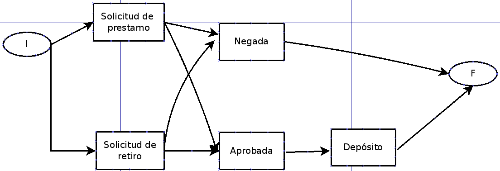
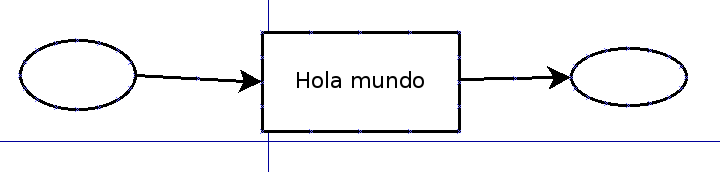

Qué es PySafet?¶
Es una librería disponible para el lenguaje de programación python que permite construir aplicaciones informáticas rápidamente utilizando dos conceptos:
- Flujo de trabajo(workflow): Consiste en el estudio de aspectos operacionales de una actividad de trabajo, esto es, cómo se realizan y estructuran las tareas, cuál es su orden correlativo, cómo se sincronizan, cómo fluye la información y cómo se hace su seguimiento. Más contenido AQUI.
- Firma electrónica: Es un concepto jurídico, equivalente electrónico al de la firma manuscrita, donde una persona acepta el contenido de un mensaje electrónico a través de cualquier medio electrónico válido.
toda la aplicación se desarrolla definiendo “que” como pysafet y no “como” Framework tradicional.
Los conocimientos para desarrollar esta aplicacion son:
- XML (lenguaje de marcador). Xml.
- SQL (lenguaje de consultas de base de datos). Sql.
- Python (lenguaje dinámico). Python.
Organización de trabajo¶
Unas de las características de las organización de hoy en día es su funciones dinámicas,emergente y pro activo se plasman en sus procesos.
Una organización es medible a través de sus procesos. Si los procesos funcionan bien la organización funciona bien.
Es por ello que la gestión debe fundamentarse en los procesos, identificando de manera expedita posible fallos.
Para medir los procesos se recurre a herramienta informática
¿ Qué pasa si estas herramientas no son flexibles (adaptarse en uno de los procesos)?:
- Muchos procesos o faces de profesos no se automatizan.
- Los dueños de los procesos no son los adecuados.
- Se produce aumentos de errores.
- No es buena la ejecución de los procesos (muchas veces es mala).
- Es frecuente la aparición de “cuellos de botella”; Al funcionamiento es pésimo cuando se aumenta la carga.
- No hay información oportuna y fiable.
- Las auditorias aumentan grandes esfuerzos y no se obtiene buenos resultados.
Ejemplo de una Organización

Figura1: Organización de trabajo.
Motivación y objetivos¶
Pysafet surge como idea de Fundacite y sucede para complementar la infraestructura de firma electrónica.
Se planteaba como un “motor de flujos de trabajo”.
La construcción de un motor de flujo de trabajo es compleja, hay dos modelos teóricos:
- BPMN: Extensión UML comunicar y como segundo objetivo implementar y calcular.
- Redes de petri: Calcular y segundo objetivos comunican.
Ejemplos de algunos Diagrama de flujo de trabajo¶
Todo proceso puede modelarse como un flujo de trabajo. Se hace necesario identificar “Eventos”,”Estado”,”Fichas”,”Recursos”, “Dependencias”,”Roles”,”Patrones”,”Mensajes”.
- Eventos: Posible hecho que cambia de estado es una ficha.
- Estado: Lugar donde reside una ficha.
- Ficha: Documento único dentro del proceso(puede cambiar de datos durante el cambio de estado, pero puede mantener un enlace o id único).
- Recursos: Lo que necesita el proceso para funcionar.
- Roles: Identidades (digitales) como posible o responsabilidades en los activos de información.
- Patrones: Compuestos de modelos generales o recurrentes en los procesos.
- Mensajes: Información sobre el a contecer de un evento dirigido a un rol externo (generalmente).
Ejemplos de flujo de trabajo: 1.- Ejemplo: Solicitar un permiso (gráfico safet y petrii)
- Gráfico usando PySafet

Figura 2: PySafet. Ejercicio: Determinar Estado,eventos,fichas,dependencias,recursos y roles
- Gráfico usando Petrii

Figura 3: Petrii. Ejercicio: Identificar eventos, estados, dependencias, roles,patrones,mensajes.
2.- Ejemplo: Caja de ahorro.

Figura 4: Caja de ahorro. 3.- Ejemplo: Hola mundo PySafet.

Figura5: Inicio de PySafet.
{kind=link}
{kind=link}
Arquitectura¶
Un motor de flujo de trabajo tiene como principal objetivo calcular (los) el siguiente estado(s) disponibles para la ficha.
- Se agregan:
- Visualización.
- Reporte y tiempos.
- Validación de estados.
Sistema Automatizado de Firma Electrónica y Estampado Electrónico¶
Es una herramienta que permite desarrollar nuevas aplicaciones de software con flujos de trabajo, es decir, automatización de forma expedita de procesos de una organización, agregando firma Electrónica y estampillado de tiempo.
La firma electrónica tiene un soporte legal en la Ley sobre Mensajes de Datos y Firma Electrónica (2001) de la República Bolivariana de Venezuela.
El sistema automatizado para la Firma Electrónica y Estampado de Tiempo (SAFET) surge como una herramienta que permite desarrollar nuevas aplicaciones de software que incluyan las funcionalidad de flujos de trabajo, firma Electrónica y estampillado de tiempo.